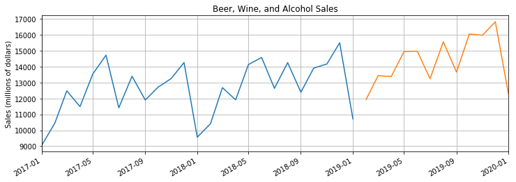

================ by Jawad Haider
- RNN on a Time Series
- Perform standard imports
- Load the dataset
- Plotting time series data
- Prepare the data
- Normalize the data
- Prepare data for LSTM
- Define the model
- Instantiate the model, define loss and optimization functions
- Train the model
- Run predictions and compare to known test set
- Invert the normalization
- Forecast into an unknown future
- Predict future values, plot the result
- Great job!
RNN on a Time Series¶
For these examples were using data from the Federal Reserve Economic Database (FRED) concerning Sales of Beer, Wine, and Distilled Alcoholic Beverages in millions of dollars from January 1992 to January 2019 (325 records).
Data source: https://fred.stlouisfed.org/series/S4248SM144NCEN
Perform standard imports¶
import torch
import torch.nn as nn
import numpy as np
import pandas as pd
import matplotlib.pyplot as plt
%matplotlib inline
# This relates to plotting datetime values with matplotlib:
from pandas.plotting import register_matplotlib_converters
register_matplotlib_converters()
Load the dataset¶
Well take advantage of pandas built-in DatetimeIndex by passing parse_dates=True
325
325
| S4248SM144NCEN | |
|---|---|
| DATE | |
| 1992-01-01 | 3459 |
| 1992-02-01 | 3458 |
| 1992-03-01 | 4002 |
| 1992-04-01 | 4564 |
| 1992-05-01 | 4221 |
| S4248SM144NCEN | |
|---|---|
| DATE | |
| 2018-09-01 | 12396 |
| 2018-10-01 | 13914 |
| 2018-11-01 | 14174 |
| 2018-12-01 | 15504 |
| 2019-01-01 | 10718 |
Plotting time series data¶
We can add titles, axis labels, and other features to the plot.
Were going to tighten the x-axis to fit the width of the actual data
with plt.autoscale(axis=x,tight=True).
Alternatively you
could set your own limits with plt.xlim(pd.Timestamp(1992-01-01),
pd.Timestamp(2019-01-01)) or some other values.
plt.figure(figsize=(12,4))
plt.title('Beer, Wine, and Alcohol Sales')
plt.ylabel('Sales (millions of dollars)')
plt.grid(True)
plt.autoscale(axis='x',tight=True)
plt.plot(df['S4248SM144NCEN'])
plt.show()
Prepare the data¶
In the next steps well divide the data into train/test sets, then normalize the training values so that they fall between -1 and 1 (to improve training). Well train the model, then predict into a period that matches the test set. Finally, well forecast into an unknown future.
# Extract values from the source .csv file
y = df['S4248SM144NCEN'].values.astype(float)
# Define a test size
test_size = 12
# Create train and test sets
train_set = y[:-test_size]
test_set = y[-test_size:]
array([10415., 12683., 11919., 14138., 14583., 12640., 14257., 12396.,
13914., 14174., 15504., 10718.])
Its worth noting that in our previous exercise the train and test sets were tensors. Here theyre numpy arrays. This is because one of the steps were about to perform outputs an array, and wed have to turn it into a tensor anyway.
Normalize the data¶
The formula for normalizing data around zero is:
###
\(X_{norm} = \frac{X - \mu} {\sigma}\) where \(\mu\) is the population mean,
and \(\sigma\) is the population standard deviation.
Recall that back
in the CNN section we transformed image files using
torchvision.transforms.Normalize(mean,
std), both because it was built into DataLoader,
and because our pretrained models expected specific normalization
values.
Ultimately we want to perform
min/max feature
scaling so that our values fall between -1 and 1, as this makes
hyperparameters converge faster.
The formula for this would be:
### \(X^{\prime} = a + \frac{(X - X_{min}) (b - a)} {X_{max} - X_{min}}\)
where \(a={-1}\) and \(b=1\)
We can use scikit-learn to do this, with sklearn.preprocessing.MinMaxScaler()
NOTE: We only want to normalize the training set to avoid data leakage. If we include the test set then the higher average values of the test set could become part of the signal in the training set. Theres a good article on data leakage here.
After using transformed data to train the model and generate predictions, well inverse_transform the predicted values so that we can compare them to the actual test data.
from sklearn.preprocessing import MinMaxScaler
# Instantiate a scaler with a feature range from -1 to 1
scaler = MinMaxScaler(feature_range=(-1, 1))
-1.0
1.0
-0.2041940178388313
numpy.ndarray
Prepare data for LSTM¶
Here well create our list of (seq/label) tuples from the training set. Recall that an LSTM consumes a window of samples toward the first prediction, so the size of our training set will become ((325 - test_size) - window_size).
# Convert train_norm from an array to a tensor
train_norm = torch.FloatTensor(train_norm).view(-1)
# Define a window size
window_size = 12
# Define function to create seq/label tuples
def input_data(seq,ws): # ws is the window size
out = []
L = len(seq)
for i in range(L-ws):
window = seq[i:i+ws]
label = seq[i+ws:i+ws+1]
out.append((window,label))
return out
# Apply the input_data function to train_norm
train_data = input_data(train_norm,window_size)
len(train_data) # this should equal 325-12-12
301
(tensor([-0.9268, -0.9270, -0.8340, -0.7379, -0.7966, -0.7439, -0.7547, -0.8109,
-0.8128, -0.7901, -0.7933, -0.6743]), tensor([-1.]))
Define the model¶
This time well use an LSTM layer of size (1,100).
class LSTMnetwork(nn.Module):
def __init__(self,input_size=1,hidden_size=100,output_size=1):
super().__init__()
self.hidden_size = hidden_size
# Add an LSTM layer:
self.lstm = nn.LSTM(input_size,hidden_size)
# Add a fully-connected layer:
self.linear = nn.Linear(hidden_size,output_size)
# Initialize h0 and c0:
self.hidden = (torch.zeros(1,1,self.hidden_size),
torch.zeros(1,1,self.hidden_size))
def forward(self,seq):
lstm_out, self.hidden = self.lstm(
seq.view(len(seq),1,-1), self.hidden)
pred = self.linear(lstm_out.view(len(seq),-1))
return pred[-1] # we only want the last value
Instantiate the model, define loss and optimization functions¶
torch.manual_seed(101)
model = LSTMnetwork()
criterion = nn.MSELoss()
optimizer = torch.optim.Adam(model.parameters(), lr=0.001)
model
LSTMnetwork(
(lstm): LSTM(1, 100)
(linear): Linear(in_features=100, out_features=1, bias=True)
)
def count_parameters(model):
params = [p.numel() for p in model.parameters() if p.requires_grad]
for item in params:
print(f'{item:>6}')
print(f'______\n{sum(params):>6}')
count_parameters(model)
400
40000
400
400
100
1
______
41301
Train the model¶
epochs = 100
import time
start_time = time.time()
for epoch in range(epochs):
# extract the sequence & label from the training data
for seq, y_train in train_data:
# reset the parameters and hidden states
optimizer.zero_grad()
model.hidden = (torch.zeros(1,1,model.hidden_size),
torch.zeros(1,1,model.hidden_size))
y_pred = model(seq)
loss = criterion(y_pred, y_train)
loss.backward()
optimizer.step()
# print training result
print(f'Epoch: {epoch+1:2} Loss: {loss.item():10.8f}')
print(f'\nDuration: {time.time() - start_time:.0f} seconds')
Epoch: 1 Loss: 0.25314346
Epoch: 2 Loss: 0.37523878
Epoch: 3 Loss: 0.39012098
Epoch: 4 Loss: 0.34949699
Epoch: 5 Loss: 0.33077896
Epoch: 6 Loss: 0.33230731
Epoch: 7 Loss: 0.32667691
Epoch: 8 Loss: 0.32077038
Epoch: 9 Loss: 0.30651760
Epoch: 10 Loss: 0.29517019
Epoch: 11 Loss: 0.26913935
Epoch: 12 Loss: 0.25979361
Epoch: 13 Loss: 0.24600053
Epoch: 14 Loss: 0.22227803
Epoch: 15 Loss: 0.18593730
Epoch: 16 Loss: 0.18445705
Epoch: 17 Loss: 0.17432655
Epoch: 18 Loss: 0.25822312
Epoch: 19 Loss: 0.22420478
Epoch: 20 Loss: 0.23121868
Epoch: 21 Loss: 0.19758533
Epoch: 22 Loss: 0.18988022
Epoch: 23 Loss: 0.21032184
Epoch: 24 Loss: 0.16950732
Epoch: 25 Loss: 0.14586549
Epoch: 26 Loss: 0.11828811
Epoch: 27 Loss: 0.00027535
Epoch: 28 Loss: 0.00681852
Epoch: 29 Loss: 0.05630350
Epoch: 30 Loss: 0.01223376
Epoch: 31 Loss: 0.02709176
Epoch: 32 Loss: 0.03447094
Epoch: 33 Loss: 0.02249899
Epoch: 34 Loss: 0.01159327
Epoch: 35 Loss: 0.01592799
Epoch: 36 Loss: 0.00303702
Epoch: 37 Loss: 0.00015524
Epoch: 38 Loss: 0.00017455
Epoch: 39 Loss: 0.00034566
Epoch: 40 Loss: 0.00000055
Epoch: 41 Loss: 0.00002718
Epoch: 42 Loss: 0.00010465
Epoch: 43 Loss: 0.00106159
Epoch: 44 Loss: 0.00250127
Epoch: 45 Loss: 0.00288290
Epoch: 46 Loss: 0.00362020
Epoch: 47 Loss: 0.00371592
Epoch: 48 Loss: 0.00542405
Epoch: 49 Loss: 0.00589132
Epoch: 50 Loss: 0.00713205
Epoch: 51 Loss: 0.00702253
Epoch: 52 Loss: 0.00773653
Epoch: 53 Loss: 0.00765838
Epoch: 54 Loss: 0.00816493
Epoch: 55 Loss: 0.00806901
Epoch: 56 Loss: 0.00782317
Epoch: 57 Loss: 0.00831962
Epoch: 58 Loss: 0.00794266
Epoch: 59 Loss: 0.00764198
Epoch: 60 Loss: 0.00736130
Epoch: 61 Loss: 0.00857497
Epoch: 62 Loss: 0.00942086
Epoch: 63 Loss: 0.00335479
Epoch: 64 Loss: 0.00118402
Epoch: 65 Loss: 0.00320848
Epoch: 66 Loss: 0.00212591
Epoch: 67 Loss: 0.00150738
Epoch: 68 Loss: 0.00153509
Epoch: 69 Loss: 0.00182797
Epoch: 70 Loss: 0.00180291
Epoch: 71 Loss: 0.00140510
Epoch: 72 Loss: 0.00096806
Epoch: 73 Loss: 0.00047413
Epoch: 74 Loss: 0.00035952
Epoch: 75 Loss: 0.00008912
Epoch: 76 Loss: 0.00112789
Epoch: 77 Loss: 0.00002196
Epoch: 78 Loss: 0.00695060
Epoch: 79 Loss: 0.00038595
Epoch: 80 Loss: 0.00011149
Epoch: 81 Loss: 0.00043127
Epoch: 82 Loss: 0.00040868
Epoch: 83 Loss: 0.00032796
Epoch: 84 Loss: 0.00048195
Epoch: 85 Loss: 0.00049252
Epoch: 86 Loss: 0.00037195
Epoch: 87 Loss: 0.00072067
Epoch: 88 Loss: 0.00096091
Epoch: 89 Loss: 0.00063866
Epoch: 90 Loss: 0.00073793
Epoch: 91 Loss: 0.00092162
Epoch: 92 Loss: 0.00084968
Epoch: 93 Loss: 0.00073029
Epoch: 94 Loss: 0.00015117
Epoch: 95 Loss: 0.00018061
Epoch: 96 Loss: 0.00010094
Epoch: 97 Loss: 0.00006259
Epoch: 98 Loss: 0.00049196
Epoch: 99 Loss: 0.00033408
Epoch: 100 Loss: 0.00050564
Duration: 278 seconds
Run predictions and compare to known test set¶
future = 12
# Add the last window of training values to the list of predictions
preds = train_norm[-window_size:].tolist()
# Set the model to evaluation mode
model.eval()
for i in range(future):
seq = torch.FloatTensor(preds[-window_size:])
with torch.no_grad():
model.hidden = (torch.zeros(1,1,model.hidden_size),
torch.zeros(1,1,model.hidden_size))
preds.append(model(seq).item())
[0.3245275914669037,
0.5227924585342407,
0.5454435348510742,
0.8364425301551819,
1.104264736175537,
0.30810344219207764,
0.8207511901855469,
0.5576714873313904,
0.5653725862503052,
0.8198413848876953,
0.9293676018714905,
0.12615284323692322]
Invert the normalization¶
We want to compare our test predictions to the original data, so we need to undo the previous normalization step. Note that inverse_transform uses the most recently applied parameters; we can rescale based on the test data, but not on the previous training data.
true_predictions = scaler.inverse_transform(np.array(preds[window_size:]).reshape(-1, 1))
true_predictions
array([[10778.82414629],
[11938.5744862 ],
[12071.07195711],
[13773.27058014],
[15339.89657426],
[10682.7510851 ],
[13681.48408699],
[12142.59936514],
[12187.64694327],
[13676.1621809 ],
[14316.83578715],
[ 9618.43105651]])
DATE
2018-02-01 10415
2018-03-01 12683
2018-04-01 11919
2018-05-01 14138
2018-06-01 14583
2018-07-01 12640
2018-08-01 14257
2018-09-01 12396
2018-10-01 13914
2018-11-01 14174
2018-12-01 15504
2019-01-01 10718
Name: S4248SM144NCEN, dtype: int64
It looks like our predictions werent that far off! ## Plot the results Our original data contains a datetime index, but our predicted values do not. We can create a range of dates using NumPy that are spaced one month apart using dtype=datetime64[M], and then store them with day values to match our dataset with .astype(datetime64[D]).
# Remember that the stop date has to be later than the last predicted value.
x = np.arange('2018-02-01', '2019-02-01', dtype='datetime64[M]').astype('datetime64[D]')
x
array(['2018-02-01', '2018-03-01', '2018-04-01', '2018-05-01',
'2018-06-01', '2018-07-01', '2018-08-01', '2018-09-01',
'2018-10-01', '2018-11-01', '2018-12-01', '2019-01-01'],
dtype='datetime64[D]')
plt.figure(figsize=(12,4))
plt.title('Beer, Wine, and Alcohol Sales')
plt.ylabel('Sales (millions of dollars)')
plt.grid(True)
plt.autoscale(axis='x',tight=True)
plt.plot(df['S4248SM144NCEN'])
plt.plot(x,true_predictions)
plt.show()

# Plot the end of the graph
fig = plt.figure(figsize=(12,4))
plt.title('Beer, Wine, and Alcohol Sales')
plt.ylabel('Sales (millions of dollars)')
plt.grid(True)
plt.autoscale(axis='x',tight=True)
fig.autofmt_xdate()
# Select the end of the graph with slice notation:
plt.plot(df['S4248SM144NCEN']['2017-01-01':])
plt.plot(x,true_predictions)
plt.show()
For more information on x-axis date formatting in matplotlib, check out matplotlib.figure.Figure.autofmt_xdate and matplotlib.dates.DateFormatter
Forecast into an unknown future¶
This time well continue training the model using the entire dataset, and predict 12 steps into the future.
epochs = 100
# set model to back to training mode
model.train()
# feature scale the entire dataset
y_norm = scaler.fit_transform(y.reshape(-1, 1))
y_norm = torch.FloatTensor(y_norm).view(-1)
all_data = input_data(y_norm,window_size)
import time
start_time = time.time()
for epoch in range(epochs):
# train on the full set of sequences
for seq, y_train in all_data:
# reset the parameters and hidden states
optimizer.zero_grad()
model.hidden = (torch.zeros(1,1,model.hidden_size),
torch.zeros(1,1,model.hidden_size))
y_pred = model(seq)
loss = criterion(y_pred, y_train)
loss.backward()
optimizer.step()
# print training result
print(f'Epoch: {epoch+1:2} Loss: {loss.item():10.8f}')
print(f'\nDuration: {time.time() - start_time:.0f} seconds')
Epoch: 1 Loss: 0.02658496
Epoch: 2 Loss: 0.02985313
Epoch: 3 Loss: 0.01421225
Epoch: 4 Loss: 0.01419733
Epoch: 5 Loss: 0.01290122
Epoch: 6 Loss: 0.01244991
Epoch: 7 Loss: 0.01119690
Epoch: 8 Loss: 0.00854800
Epoch: 9 Loss: 0.00788417
Epoch: 10 Loss: 0.00792318
Epoch: 11 Loss: 0.00556064
Epoch: 12 Loss: 0.00598394
Epoch: 13 Loss: 0.00537636
Epoch: 14 Loss: 0.00649350
Epoch: 15 Loss: 0.00798889
Epoch: 16 Loss: 0.00699036
Epoch: 17 Loss: 0.00741554
Epoch: 18 Loss: 0.00671443
Epoch: 19 Loss: 0.00555703
Epoch: 20 Loss: 0.00517232
Epoch: 21 Loss: 0.00519288
Epoch: 22 Loss: 0.00412102
Epoch: 23 Loss: 0.00535119
Epoch: 24 Loss: 0.00888540
Epoch: 25 Loss: 0.00753472
Epoch: 26 Loss: 0.00589289
Epoch: 27 Loss: 0.00580891
Epoch: 28 Loss: 0.00776316
Epoch: 29 Loss: 0.00629479
Epoch: 30 Loss: 0.00895946
Epoch: 31 Loss: 0.00883982
Epoch: 32 Loss: 0.00968022
Epoch: 33 Loss: 0.00415197
Epoch: 34 Loss: 0.00383917
Epoch: 35 Loss: 0.00253066
Epoch: 36 Loss: 0.00149691
Epoch: 37 Loss: 0.00340568
Epoch: 38 Loss: 0.00264327
Epoch: 39 Loss: 0.00205079
Epoch: 40 Loss: 0.00436785
Epoch: 41 Loss: 0.00065083
Epoch: 42 Loss: 0.00063657
Epoch: 43 Loss: 0.00052040
Epoch: 44 Loss: 0.00060114
Epoch: 45 Loss: 0.00001630
Epoch: 46 Loss: 0.00138428
Epoch: 47 Loss: 0.00005873
Epoch: 48 Loss: 0.00092580
Epoch: 49 Loss: 0.00028546
Epoch: 50 Loss: 0.00265119
Epoch: 51 Loss: 0.00000118
Epoch: 52 Loss: 0.00076291
Epoch: 53 Loss: 0.00050618
Epoch: 54 Loss: 0.00063220
Epoch: 55 Loss: 0.00001087
Epoch: 56 Loss: 0.00001940
Epoch: 57 Loss: 0.00038629
Epoch: 58 Loss: 0.00057537
Epoch: 59 Loss: 0.00001950
Epoch: 60 Loss: 0.00133490
Epoch: 61 Loss: 0.00203123
Epoch: 62 Loss: 0.00004929
Epoch: 63 Loss: 0.00098640
Epoch: 64 Loss: 0.00086584
Epoch: 65 Loss: 0.00075280
Epoch: 66 Loss: 0.00050309
Epoch: 67 Loss: 0.00211758
Epoch: 68 Loss: 0.00260141
Epoch: 69 Loss: 0.00385657
Epoch: 70 Loss: 0.00009936
Epoch: 71 Loss: 0.00036399
Epoch: 72 Loss: 0.00154005
Epoch: 73 Loss: 0.00036845
Epoch: 74 Loss: 0.00021908
Epoch: 75 Loss: 0.01171840
Epoch: 76 Loss: 0.00335702
Epoch: 77 Loss: 0.00374896
Epoch: 78 Loss: 0.00772837
Epoch: 79 Loss: 0.00071883
Epoch: 80 Loss: 0.00118207
Epoch: 81 Loss: 0.00225649
Epoch: 82 Loss: 0.00011194
Epoch: 83 Loss: 0.00061754
Epoch: 84 Loss: 0.00208528
Epoch: 85 Loss: 0.01009495
Epoch: 86 Loss: 0.00545910
Epoch: 87 Loss: 0.00120122
Epoch: 88 Loss: 0.00036599
Epoch: 89 Loss: 0.00008251
Epoch: 90 Loss: 0.00085317
Epoch: 91 Loss: 0.00470886
Epoch: 92 Loss: 0.00336765
Epoch: 93 Loss: 0.00118269
Epoch: 94 Loss: 0.00009316
Epoch: 95 Loss: 0.00007733
Epoch: 96 Loss: 0.00416005
Epoch: 97 Loss: 0.00755412
Epoch: 98 Loss: 0.00003969
Epoch: 99 Loss: 0.00005710
Epoch: 100 Loss: 0.00009160
Duration: 297 seconds
Predict future values, plot the result¶
window_size = 12
future = 12
L = len(y)
preds = y_norm[-window_size:].tolist()
model.eval()
for i in range(future):
seq = torch.FloatTensor(preds[-window_size:])
with torch.no_grad():
# Reset the hidden parameters here!
model.hidden = (torch.zeros(1,1,model.hidden_size),
torch.zeros(1,1,model.hidden_size))
preds.append(model(seq).item())
# Inverse-normalize the prediction set
true_predictions = scaler.inverse_transform(np.array(preds).reshape(-1, 1))
# PLOT THE RESULT
# Set a data range for the predicted data.
# Remember that the stop date has to be later than the last predicted value.
x = np.arange('2019-02-01', '2020-02-01', dtype='datetime64[M]').astype('datetime64[D]')
plt.figure(figsize=(12,4))
plt.title('Beer, Wine, and Alcohol Sales')
plt.ylabel('Sales (millions of dollars)')
plt.grid(True)
plt.autoscale(axis='x',tight=True)
plt.plot(df['S4248SM144NCEN'])
plt.plot(x,true_predictions[window_size:])
plt.show()

fig = plt.figure(figsize=(12,4))
plt.title('Beer, Wine, and Alcohol Sales')
plt.ylabel('Sales (millions of dollars)')
plt.grid(True)
plt.autoscale(axis='x',tight=True)
fig.autofmt_xdate()
plt.plot(df['S4248SM144NCEN']['2017-01-01':])
plt.plot(x,true_predictions[window_size:])
plt.show()

Great job!¶
BONUS:
To save time in the future, weve written a function that will take in a time series training data set, and output a tensor of (seq, label) tuples.
# Load dependencies
from sklearn.preprocessing import MinMaxScaler
# Instantiate a scaler
"""
This has to be done outside the function definition so that
we can inverse_transform the prediction set later on.
"""
scaler = MinMaxScaler(feature_range=(-1, 1))
# Extract values from the source .csv file
df = pd.read_csv('../Data/TimeSeriesData/Alcohol_Sales.csv',index_col=0,parse_dates=True)
y = df['S4248SM144NCEN'].values.astype(float)
# Define a test size
test_size = 12
# Create the training set of values
train_set = y[:-test_size]
# DEFINE A FUNCTION:
def create_train_data(seq,ws=12):
"""Takes in a training sequence and window size (ws) of
default size 12, returns a tensor of (seq/label) tuples"""
seq_norm = scaler.fit_transform(seq.reshape(-1, 1))
seq_norm = torch.FloatTensor(seq_norm).view(-1)
out = []
L = len(seq_norm)
for i in range(L-ws):
window = seq_norm[i:i+ws]
label = seq_norm[i+ws:i+ws+1]
out.append((window,label))
return out
# Apply the function to train_set
train_data = create_train_data(train_set,12)
len(train_data) # this should equal 313-12
301
(tensor([-0.9268, -0.9270, -0.8340, -0.7379, -0.7966, -0.7439, -0.7547, -0.8109,
-0.8128, -0.7901, -0.7933, -0.6743]), tensor([-1.]))
Help on function create_train_data in module __main__:
create_train_data(seq, ws=12)
Takes in a training sequence and window size (ws) of
default size 12, returns a tensor of (seq/label) tuples